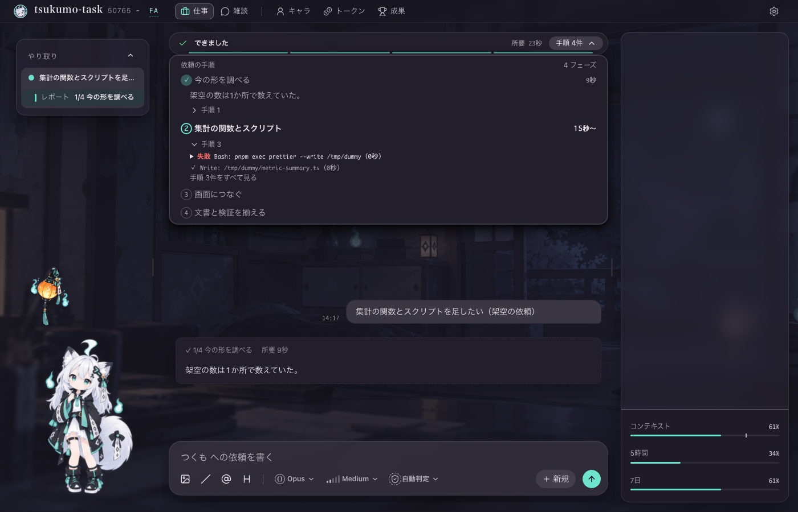
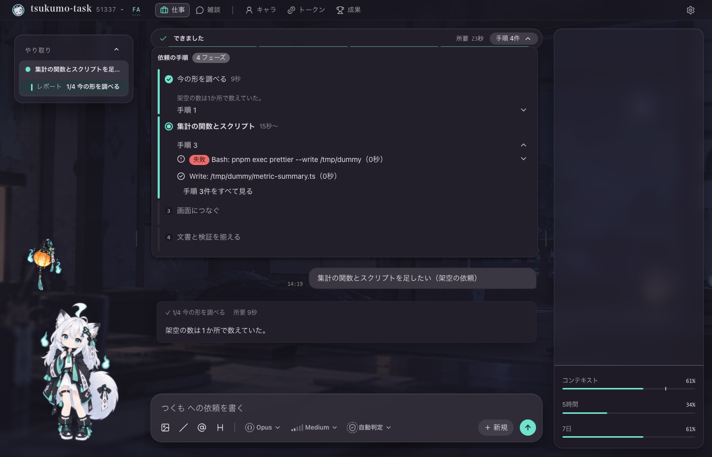

ピルの「手順」の面を Astryx に寄せる — 前後の比較
疑似セッションの同じ場面を、今の描き方と、ui/ の Astryx の包みで描き替えた形で撮った（1400×900）。後の画は本物の部品で描いた一時の差し替えで、コードは送っていない。
差し替えた部品
| 要素 | 今 | 寄せた形 |
|---|---|---|
| 面の器 | 自前の div と絶対配置の CSS | Popover（「手順」ボタンを anchor にした層） |
| 見出しのフェーズ数 | 右端の地の文 | Badge |
| フェーズの行 | ol・li と丸数字の文字 | Stepper（縦）と Step。済みはチェックの丸、今は塗りの丸、これからは番号 |
| 「手順 n」の開閉 | ui/disclosure（素の details） | Collapsible（山形の印は右端） |
| 手順の行 | li と ✓ の文字 | List・ListItem とアイコン |
| 失敗した手順 | 赤字の「失敗」と details・pre | Badge（ng）と Collapsible、中は CodeBlock の出力と引数 |
| 「すべて見る」「済んだ n フェーズ」 | 素の button | Button（link・ghost） |
| 目安の残り | 下端の地の文 | Badge（accent） |
| ワークフローの図・所要時間の帯 | そのまま（図の箱はもう Astryx。矢印の SVG と滝の図は Astryx に同じ役の部品が無い） | |
フェーズの行と手順（場面 work-strip-running）


ワークフローの図（場面 workflow-diagram-seq）
寄せた形で目に付いたこと
- Stepper の縦の線は今のフェーズまで差し色で伸びるので、どこまで済んだかが行の印を読まなくても分かる。
- Collapsible は山形の印が右端に付くため、「手順 1」の文字と印が離れる。今は左に印がある。
- Popover は帯の下端に少し重なり、区間の下線が隠れる。置く位置の間隔を詰め直す必要がある。
- Popover の中では、図の「受け入れ → 振り返り」の矢印が描かれなかった。矢印の座標を測る時機が層の表示とずれている見込み。
- 面の高さは今より増える（同じ場面で 299px → 391px）。Stepper の行の間隔と ListItem の行の高さによる。
「直し 1」の所要が「448099分21秒」のように大きく出ているのは、今と寄せた形のどちらにも出ていて、今回の差し替えとは関係が無い（原因はまだ調べていない）。